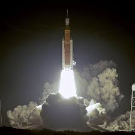

Key Parts
The key components of the mission are the spacecraft, crew, and ground based communications team. These three parts are crucial, the craft needs to be able to handle the harsh environment of deep space, traveling 238,856 miles from Earth to the Moon. The crew must remain calm and able to work under pressure, and ground communications must maintain a strong signal to keep the crew safe and guide them if anything goes wrong. This is vital so they can make on the fly changes to code or help engineer a fix, like the time astronaut Luca Parmitano had water fill the hood of his suit ground control identified the issue and canceled his spacewalk.
The Future
There will be long duration stays on the Moon with the help of new EVA suits, which will be stronger than ever for extended missions on the lunar surface. Crew rotations will be supported by the Lunar Gateway. And then finally Mars, the end goal. This system will be used as a refueling station for future space exploration. These tasks, provided by NASA, will change life for humans more than we can imagine.
Learn More from NASA
- NASA Space Launch System Overview
- NASA Orion Spacecraft Overview
- NASA Lunar Gateway Overview
- NASA Human Landing System Overview
